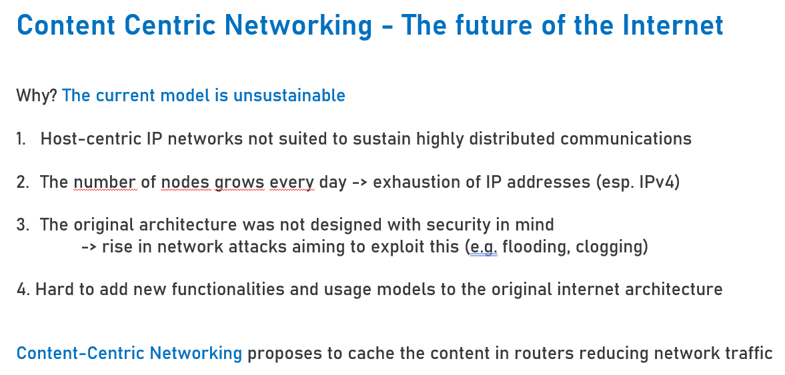
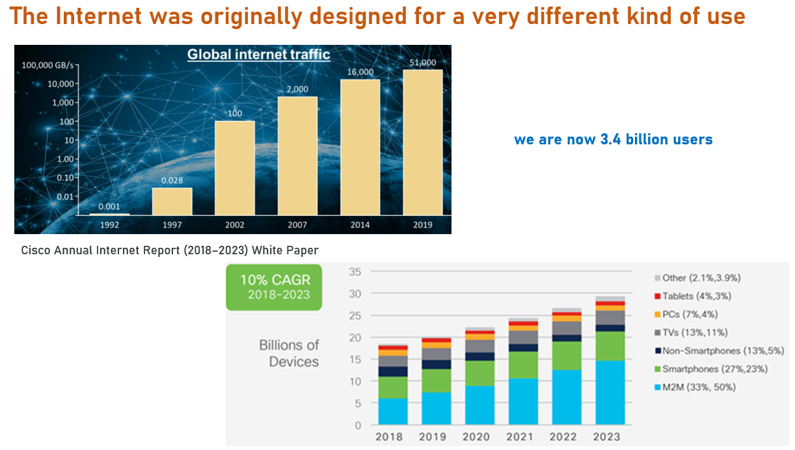

During this module I was lucky enough to work with the same team I have been working with since January plus the addition of Chris.
We worked really well together and I shall make sure to go into details in the sections below.
Unit 3 - Scanning exercise
For this first scanning exercise we relied on Shiraj quite a bit since none of us had any previous experience on this topic other than him. We were asked to perform a scan using standard tools such as ping, traceroute, dig and nslookup. Making use of these tools we had to answer some questions on how many hops from machine to machine, what was the average delay, what were the nameservers, if the MX record for the website was and where the website was hosted.
In addition to discussing the results of the scan we had to answer the following questions in seminar 2:
- Did you have any issues or challenges with the scans?
- How did you overcome them?
- How will they affect your final report?
We did not have issues or challenges with the scans since we were already accustomed to working together and we understood how to lean on Shiraj while learning from him as opposed to just having him do the job and us not learning anything. We all overcame our lack of expertise by watching Shiraj performing the scans and trying ourselves in turn asking questions. Our final report was not affected by it.
Unit 7 - Scanning exercise and Collaborative Learning wiki
For this exercise we had to scan against our assigned website using Kali Linux and answer some questions regarding open ports, the OS, protection, known vulnerabilities and so on.
All and all this has been a solid exercise to carry out as a team, albeit a bit more time consuming than what we would have liked considering the rest of the coursework to do.

Unit 7 - ePortfolio Team Activity on kali Linux
For this team activity we had to read a few reviews of available PenTesting tools and evaluate them.
One article by Leroux (2020) concerned Kali Linux and the other by Bhatt (2018) was a study paper on Kali as well.
My team’s answers and thoughts are presented below. Shiraj, having a lot of experience, has definitely guided us through some of the answers. However, we purposely answered them separately before reviewing the answers together so that we all had a chance to do research on our own without relying too much on Shiraj.
The articles were great in that they taught me the correct sequence to perform the actions in and detailed the various phases of a pen test using Kali. It was extremely useful to see Kali applied to a real-world situation
The results in the papers are quite similar to our use of the tool and our results. The only difference is that we included other tools in our scan as well such as Nikto.
The criteria used in the articles are excellent qualitative-wise in that they cover most if not all the quality a good pen test software should have. However, they do only provide whether a tool has a feature or not by using a yes/no system.
Kali is still open source while Nessus is now a proprietary tool.
Our original evaluation score has not changed.
Unit 8 - GDPR Case Study
For the GDPR case study we ran a bit of a brainstorming session to pick one that would be ideal for a cybersecurity course. I then volunteered to investigate further and present the case to the team in order to gather more ideas and validate the answers to the discussion forum questions together.
The Case was a 2017 one called “Failure by the Department of Justice and Equality to impose the correct access restrictions on access to medical data of an employee”. In this instance of GDPR violation, the sensitive medical data of an employee were visible and could be accessed by approximately 80 staff members from the Department. The line manager omitted to restrict access and therefore violated GDPR. This case was relevant because it dealt with the poor management of a database and therefore was a great point to build on the knowledge we got form the first module of the Masters.
Unit 10 - Data Breach Case Study
For the Data Breach case study we went with the PlayStation Network hack since we all more or less qualify as gamers within the team and have done plenty a team building activity through gaming together.
On the surface it looks like any other data breach case study in which users’ personal data were stolen, however it does have more interesting elements. We’ll never know the full story since Sony essentially shut down any information on this, including whether the ICO was notified, whether or not they had a business continuity plan and how much data was actually stolen.
The PSN hack is a great case study for a few reasons:
- It happened right at the beginning of online services and digital purchases becoming relevant
- The attackers used a DDoS attack to create a diversion and then proceeded to compromise the machine of a SysAdmin while everyone was focused on the DDoS attack
- It has hacktivist implications since it was done also as a reprisal to protest Sony’s legal actions against George Hotz, a programmer who managed to reverse enginneer the PlayStation 3
Unit 11 - Team Debate
As a final team activity we had to read two articles on alternative networking architectures and make supporting arguments for a position assigned to us.
We were Team 1 and our “belief” was that the future of the Internet is based on content centric networking (CCN &/or NDN or COAST).
We had to prepare a few slides on this and present them during the last seminar.
I had a lot of fun preparing this activity in that we had a very pleasant discussion with the team and I then volunteered to prepare the Power Point presentation.
Since I do have a basic understanding of the topic assigned to us but I know I cannot compete with the technical knowledge of some of my peers, I ran this as a political campaign which is within my expertise.
Below are sample slides

